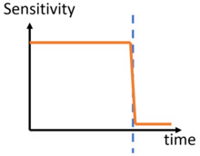
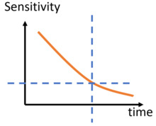
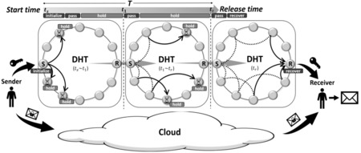

Overview

in a large-scale Distributed Hash Table (DHT) network that makes the data available and accessible only at the defined release time.
Most timed-release solutions are centralized. As a distributed solution based on DHT, Emerge offers these main advantages:
- No need to trust servise providers.
- No single point of failure issue.
Motivation
Flow chart for releasing data to future:

Time-varying sensitivity of data:
-
The sensitivity of data can fall suddenly at a threshold time points:
- Online voting/bidding system.
- Online exam system.
-
The sensitivity of data can also reduce gradually along the time. After a threshold sensitivity, the data becomes releasable:
- Personal data of individuals (e.g., medical diagnostics information, web browsing patterns, location trajectory patterns) collected during the childhood and adult life of individuals.


Framework
There are four major entities in the Emerge system:
- Data sender: the entity who wants to send data to the data receiver.
- Data receiver: the entity who wants to get access to the message sent by the data sender.
- DHT network: It is required to hold and hide the secret key before the release time.
- Cloud: it is required to store the encrypted data.

Challenges
- Release-ahead attack: to extract encryption key from DHT network to decrypt data before release time.
- Drop attack: to prevent encryption key to be received by legitimate receivers to decrypt data in cloud at release time.
- Churn: the phenomenon that nodes frequent join and leave DHT network.
Emerge protocols
- One-hop scheme: it applies erasure coding to split encryption key package into n fragments and send each of them through an one-hop path to receiver to allow at most n-m of fragment transmissions to be unsuccessful.
- Adjusted one-hop scheme: it estimates the number of dead holder nodes and reserve some fragments for them through adjusting m and n.
- Multi-hop scheme: it arrange multiple sets of nodes to carry the packages in relay from the sender to the receiver.

Publications
- Chao Li and Balaji Palanisamy, "Timed-release of Self-emerging Data using Distributed Hash Tables", Proc. of 37th IEEE International Conference on Distributed Computing Systems (ICDCS 2017), Atlanta, USA. [PDF]
- Chao Li and Balaji Palanisamy, "Emerge: Self-emerging Data Release using Cloud Data Storage", Proc. of 10th IEEE International Conference on Cloud Computing (Cloud 2017), Honolulu, USA.[PDF]